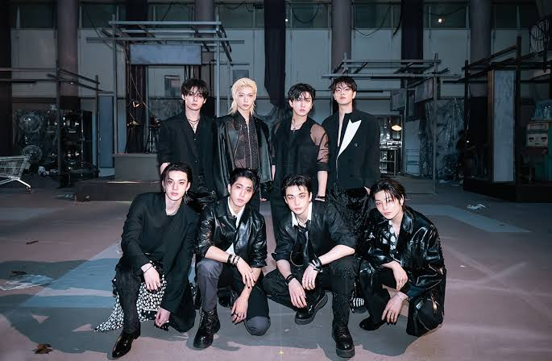

Linkin Park
Minha banda de rock favorita! Eles possuem músicas que conversam diretamente com os sentimentos de quem está ouvindo.
Músicas favoritas: Up From The Bottom, The Emptiness Machine, Crawling.
Boas-vindas ao meu blog sobre as músicas, cantores, grupos e bandas que gosto!
Por: Lucas
Minha banda de rock favorita! Eles possuem músicas que conversam diretamente com os sentimentos de quem está ouvindo.
Músicas favoritas: Up From The Bottom, The Emptiness Machine, Crawling.

Eles são o meu grupo favorito! Fazem mais de SEIS anos que acompanho.
Músicas favoritas: É muito difícil escolher só algumas músicas como favoritas diante da infinidade de opções que eles produzem.
Curiosidades: Meu integrante favorito (utt) é o Han! Gosto muito de todos, mas me identifico demais com ele.